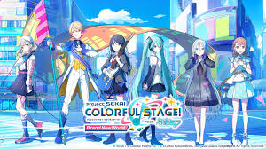
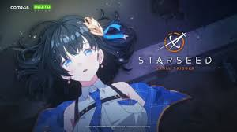

<body>
    <head>
     <style>
        @import url(sheet.css);
        @font-face {
        font-family: 'WavvePADO-Regular';
        src: url('https://cdn.jsdelivr.net/gh/projectnoonnu/2404@1.0/WavvePADO-Regular.woff2') format('woff2');
        font-weight: normal;
        font-style: normal;
    }
    *{font-family: 'WavvePADO-Regular'}
     </style>
    </head>
        <div id="circle">
            <a href="웹프로그래밍 css 1차.html"> 
            </img></a>
        </div>
        <div class="contents">
         <h3>[좋아하는 것]</h3>
         좋아하는 것을 다시 써보려 합니다. 이제야 말할 수 있다! 무엇을 숨기랴! 저는 애니메이션이 가장 좋습니다.
         일상생활에서는 힘든 일이 많고 사회적 관념이라는 틀에서 올바르게 행동하지 못 한다고 매를 맞기에
         일탈하기에 참 좋기 때문이죠. 이미지들은 현재하는 일탈중 가장 활발히 활동하고 있는 것들입니다. (좀 힘들었어요.. 이해해주세요.)
        </div>
        <div>
             


        </div>
</body>